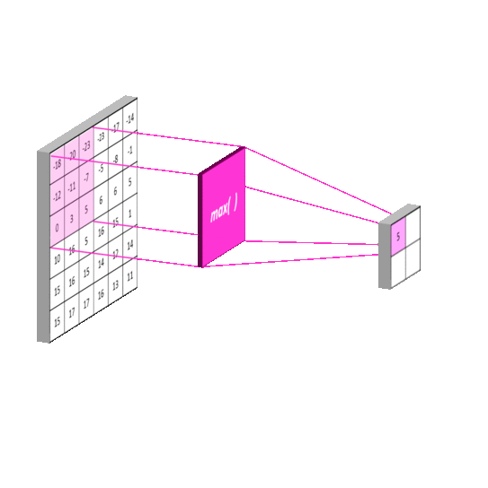
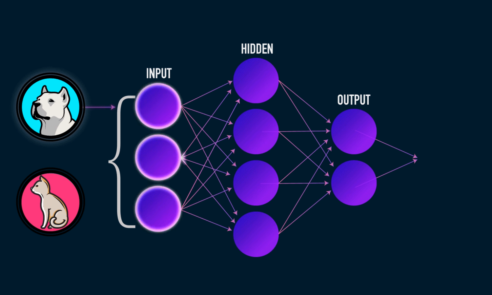

¿Qué Hace el Modelo?
Nuestro modelo analiza cada imagen, localiza los objetos y reconoce personas, perros y gatos directamente en el navegador.

Red Convolucional
Utiliza filtros que extraen características como bordes, formas y patrones importantes dentro de la imagen.

MaxPooling
Reduce la dimensionalidad de las imágenes manteniendo información importante, aumentando la eficiencia del modelo.

Detección en tiempo real
El modelo identifica varias personas o mascotas a la vez y muestra su ubicación y nivel de confianza.